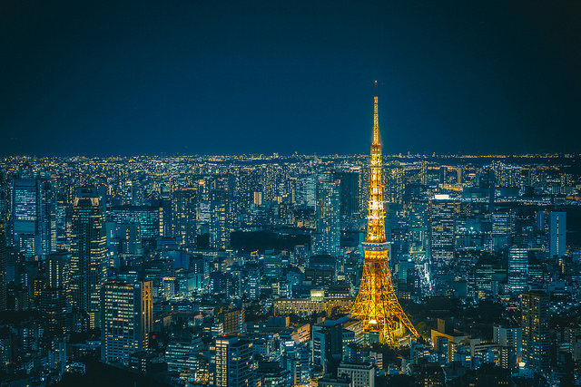
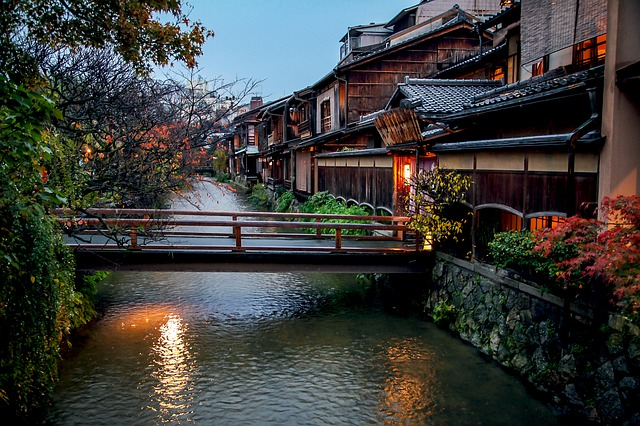
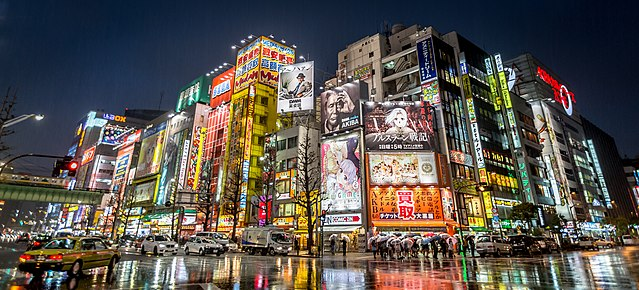
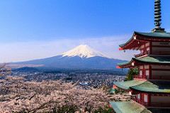
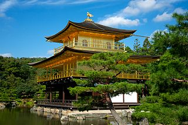
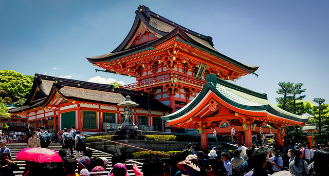
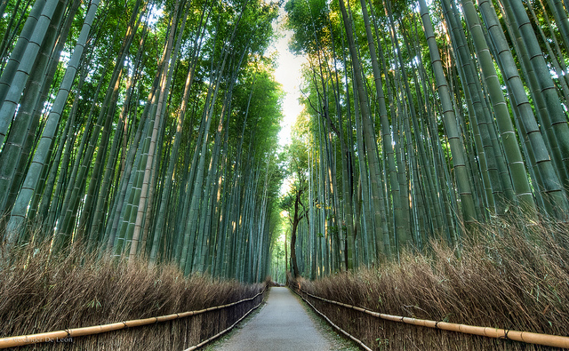
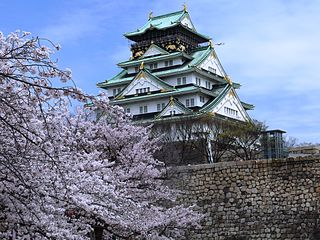

Places to visit
- Tokyo
- 
Retrieved from flickr
- Tokyo has been the capital of Japan since 1869 and is the largest city in the country. With some of the best restaurants in the world, the largest economy of any urban area in the world, and highest population of any urban area in the world, it truly is a wonder to behold.
- Kyoto
- 
Retrieved from pixabay
- Kyoto was the capital of Japan for over one thousand years from 794-1868. It includes some of the most beautiful historical sites that Japan has to offer and offers a view into more rural aspects of life in Japan while still being a city of over 1 million. It was largely untouched by the bombing during World War 2 and is the best place to visit to see pre-war architecture.
- Akihabara
- 
Retrieved from wikimedia
- Akihabara while not actually a city on its own, is an area around Akihabara Station nicknamed "Akihabara Electric Town". These days it acts as sort of a Las Vegas of otaku. They embrace otaku culture and sell anime, manga, video games, and computer goods. The city has an atmosphere that tries to replicate the feel of anime and manga. This includes maid cafes, cosplayers, idol group theaters, and special release events for new products.
- Mount Fuji
- 
Retrieved from flickr
- Mount Fuji is the tallest mountain in Japan and a global icon. Snowcapped about half the year this picturesque scene has inspired countless artists to recreate the scene in paintings, animations, books, sketches, you name it. A definite must to visit of you head to Japan, even if you are not up for the trip to the top to see the "goraikō", the Japanese word for the morning light seen from atop Mt. Fuji.
- Kinkaku-ji
- 
Retrieved from Wikimedia
- The Kinkaku-ji, the Temple of the Golden Pavilion, the Deer Garden Temple, whatever you may call this historical monument, you have to see it in person. The Zen Buddhist temple has been around for over 400 years and preserved in amazing fashion. The top two stories are covered in pure gold leaf and have a magnificent shine.
- Fushimi Inari-taisha
- 
Retrieved from flickr
- Fushimi Inari-taisha is a shrine network snaking up miles of paths through the mountain. Primarily serving the god of rice Inari it is also visited and prayed to for success in business. Some of the earliest structures were built as early as 711 while the main structure was built in 1499. The path to the inner shrine takes a path lined by thousands of gate like structures called torii and is a spectacular sight to see.
- Arashiyama
- 
Retrieved from flickr
- When it comes to nature and what you imagine Japan's beautiful natural landscapes look like you are probably thinking at least in part of Arashiyama. With forests of bamboo, cherry tree blossoms, and even a monkey park, Arashiyama really is stunning. The beauty of Arashiyama simply defies words and you must go visit yourself.
- Osaka Castle
- 
Retrieved from Wikimedia
- Osaka Castle sits on 15 acers of land surrounded by a moat. Construction started in 1583 and was built to mirror Oda Nobunaga's castle and then exceed it in every possible way. It has since been burned to the ground 3 times and every time it has come back and is currently a complete reconstruction of the original. It functions today as a historical museum.